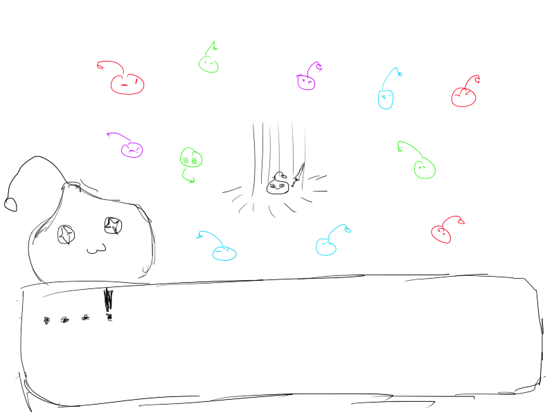

The Sword in the Slime is a 2D top-down RPG telling the comedic story of a slime that accidentally picks up the hero's sword. The sword was enchanted by the great wizard Merlin so that the wielder would be recognized by all as the hero of light. Having picked up the sword, the slime is embued with a burning righteousness and must now embark on an adventure to defeat the evil shog-- demon king!
"Whoso pulleth out this sword of this sto-- slime? is rightwise ki-- hero born of all Engla-- *cough* excuse me -- of all." - supposed interdimensional traveler Sir Thomas Mallory
The story/game will be stage-based with either waves, bosses, or a combination. These stages are triggered as the player walks into marked areas. Story is revealed and driven by interactions with either NPCs or completing certain requirements. The end goal of the game is to defeat the evil demon king.
If creating a world to explore is too difficult, then it's feasible to have the game be purely stage-based. The player will simply not have to make decisions outside of stages, i.e. the player doesn't need to walk around and interact with NPCs or the environment. Instead, after a stage is completed, some event will occur, e.g. meeting an NPC or finding a weapon, that will drive the story. It's also possible to a combination by having a city/village hub to move freely around.
The player can move through the use of the WASD keys and can attack by swinging its sword (e.g. spacebar). The player can also gain experience, level up, gain new abilities, and raise stats. How? Well, the slime is a Hero, so it can do anything.